01 / MLB RESEARCH
MLB
경기 데이터 분석·예측 시스템 연구
경기 전 양 팀을 비교하고, 경기 후 실제 결과와 대조하는 개인 연구입니다. 집계 지표만으로 다루기 어려운 선수별 플레이와 경기 흐름을 읽기 위해 통계 모델에 LLM 경기 분석기 ‘네레이터’를 추가했습니다.
경기 데이터 분석 · 개인 연구
자세히 보기접기연구 구조도 · 담당 기능 · 평가 결과와 조건 · 네레이터 분석 · 문제 해결 · 회고
연구 구조도와 구현 문서





연구 산출물 보고서와 평가 설계 · CLI·파일 기반
경기 전 시점으로 맞추기
투수 누적 기록에서 당일 결과를 제외하고, 미래 정보를 보지 않는 시간순 평가로 구성
플레이의 맥락 읽기
끝난 경기의 PBP를 읽고, 선발·불펜·타자 누적 지표와 연결하는 네레이터 추가
입력과 판단을 대조하기
예측 당시 입력을 남겨 경기 후 실제 플레이와 비교하고, 판단이 달라지는 이유 조사
| 구간 | 용도 | 규모 |
|---|---|---|
| 2021~2023 | 학습 | — |
| 2024 | 검증 | — |
| 2025 | 테스트 | 2,416경기 |
- 목적
- 경기 전 양 팀 비교에서 통계 모델이 못 읽는 선수의 플레이와 경기 흐름을 LLM 분석기로 읽기
- 입력 → 출력
- 공식 자료·PBP·누적 지표 → 예측과 근거 기록 → 경기 후 실제 결과와 대조
- 개인 연구
- 자료 수집, 모델 실험, 네레이터 분석과 경기 후 결과 대조를 개인 연구로 진행했습니다.선수별 비교에 필요한 자료 범위와 경기 전 검증 순서를 정하고, 평가 결과를 보고 적용·중단을 판단했습니다.
담당 기능
자료 연결과 점검
경기와 선수 ID를 연결한 뒤 조인 중복, 단위, 결측을 확인했습니다. 예측에 쓸 투수 기록은 당일 결과를 제외한 값으로 구분했습니다.
경기별 입력과 추론 분리
경기별 메모장과 관련 자료를 나눠 한 경기씩 분석하도록 했습니다. 수집한 선수 자료가 최종 입력에서 빠졌는지도 대조했습니다.
예측 당시 기록 보관
경기 후 틀린 판단을 조사할 수 있도록, 입력과 모델 정보, 해시, 변수별 기여도를 예측 직후 함께 남기는 방식을 채택했습니다.
판정 방식 비교와 확장 여부 결정
같은 근거를 두 LLM이 읽은 결과를 비교했습니다. 일치도가 기준에 못 미친 판정 방식은 확장하지 않기로 했습니다.
평가 결과와 조건
2,416경기
2021~2023년 학습, 2024년 검증을 거친 승패 모델의 테스트 규모입니다. 이후 전체 기간 재학습 모델과 구분했습니다.
0.524 / 이번 실험 통과 기준 0.60
같은 경기 자료를 보고 ‘예측할 만큼 근거가 충분한지’를 두 LLM이 각각 판단했습니다. 우연히 답이 같을 가능성을 보정한 일치도입니다(Cohen's kappa).
24회 판단 / 5경기
고정한 경기 사례로 두 LLM의 판단을 비교한 규모입니다. 일치도 기준을 충족하지 못해 계획했던 96경기 비교는 진행하지 않았습니다.
네레이터 분석 구조
과거 경기 내용과 선수별 기록
종료 경기의 플레이 기록(PBP)을 읽고, 선수별 지표와 대조해 사전에 알 수 있던 근거와 사후 사건을 나눠 보관
양 팀의 선수와 경기 조건
선발·타순·불펜 사용량과 최근 기록
부상·날씨·구장 정보
경기별 메모장으로 묶기
목표일 이전 기록과 당일 사전자료를 연결합니다. 상황이 비슷한 과거 판단 사례를 참고로 붙이고, 입력 파일의 식별값(해시)을 함께 남깁니다.
양 팀 근거와 반론 비교
각 경기를 독립적으로 분석합니다. 선발·타선·불펜·환경을 비교하고, 모델의 계산 근거도 참고해 승패와 총득점을 따로 판단합니다.
승패 확률과 예상 총득점
예측 당시 입력과 변수별 기여도
모델의 선택은 비교할 참고 자료
양 팀 중 근거가 우세한 쪽
기준점보다 많을지 적을지
선택을 지지하거나 약화하는 자료
결론을 정하기 어려운 경우
경기 ID, 입력 해시와 응답 형식을 코드로 검사하고 실패한 경기만 제한적으로 다시 처리합니다. 독립 LLM 검토는 실행 조건에 따라 별도로 적용합니다.
긴 입력에서 근거가 빠지는 문제
수집한 선수 자료가 최종 입력에 빠지거나, 전달한 반대 근거를 최종 판단에서 다루지 않는 경우가 있었습니다. 긴 문맥 중간의 정보를 놓치는 Lost in the Middle을 의식해 입력 구성과 검토 방식을 바꿨습니다.
도입한 구조
원본 자료와 최종 입력 대조
경기·선발·타순·선수별 자료 목록과 프롬프트를 비교해, 자료를 모은 뒤 전달 과정에서 빠진 항목을 찾았습니다.
경기별 메모장과 독립 추론
여러 경기를 한 번에 판단하던 입력을 나눴습니다. 한 경기의 사실과 참고 사례를 메모장으로 묶고, 경기마다 따로 분석하게 했습니다.
추가로 시험한 방법
핵심 근거를 앞부분에 재배치
충돌하는 근거를 입력 앞에 다시 배치해 비교했습니다. 적중 건수가 늘지 않아 기본 적용은 보류했습니다.
분야별 중간 판단 저장
선발·타선·불펜 등 10개 섹션을 차례로 읽고, 근거와 반론을 JSON으로 저장했습니다. 최종 단계가 이 기록을 다시 읽고 비교하도록 시험했습니다.
입력에서 빠진 자료와 판단 기록에서 빠진 근거를 나눠 확인할 수 있게 됐습니다. 근거 ID의 기록 여부는 검사했지만, 그 의미를 정확히 이해하고 판단에 반영했는지는 별도 문제로 남았습니다.
어떤 근거를 우선해 판단할 것인가
사전자료를 전달해도 종합 성적에 치우치거나, 근거가 부족하다며 판단을 과도하게 보류했습니다. 과거 경기에서 판단 방법을 뽑아 참고 사례로 연결했고, 다음 연구에서는 조건과 반론을 더 자세히 기록했습니다.
- 기준 추출 연구
과거 경기에서 판단 방법 정리
실제 플레이와 당시 사전정보를 대조했습니다. 어떤 조건을 함께 봐야 했는지, 어떤 반대 근거가 그 판단을 무효화하는지 남겼습니다. 경기 후에야 알게 된 사건은 사전 조건에서 제외했습니다.
- 검색 연구
다른 경기의 당일 조건과 연결
대상 경기보다 이전 사례만 검색했습니다. 과거 선수의 수치나 근거 번호를 그대로 쓰지 않고, 오늘 경기에서 대응하는 값과 출처에 다시 연결했습니다.
- 단계별 판정 실험
양 팀의 승리 경로와 반론 비교
필수조건 충족 여부와 기준을 무효화하는 조건을 따로 판단했습니다. 양 팀의 승리 경로, 서로 충돌하는 근거, 최종 선택 이유를 단계별로 저장했습니다.
판단기준 추출·검색·단계별 판정은 각각 별도 연구로 진행했습니다.
참고 기준을 찾았는지뿐 아니라, 오늘 경기에서 그 기준을 적용하거나 배제한 이유까지 추적할 수 있게 했습니다.
경기 이전 투수 기록 구성 코드
공개 소스 src/_mlb_sp_asof_clean.py 26~49행 중 일부입니다. 투수의 누적합에서 현재 경기 값을 빼는 부분을 발췌했습니다.
def asof_sp_full(g):
"""게임레벨 박스(g) → per-(gamePk,side) as-of-prior SP스탯. 순수함수(테스트).
핵심 누수0 불변: c_X = sp_id별 시간순 cumsum − 현재경기 (현재경기 자신 제외)."""
...
sp = pd.concat(rows).dropna(subset=["sp_id"]).sort_values("date").reset_index(drop=True)
sp["sp_id"] = sp["sp_id"].astype(int)
gr = sp.groupby("sp_id")
for col in ("er", "ip", "h", "bb", "k", "hr"):
sp[f"c_{col}"] = gr[col].cumsum() - sp[col] # 누적 − 현재 = as-of-prior (현재경기 제외=누수0)
sp["nprior"] = gr.cumcount()기술적 문제 해결
입력 시점 오류와 예측 기록 보관
기간은 나눠 평가했는데, 누적값에 당일 결과가 섞였습니다.
- 문제
- 학습/검증 기간을 분리해도 입력 시점 오류는 사라지지 않았습니다.
- 원인
- 투수의 누적 비율 지표에 예측 대상 경기의 결과가 포함돼 있었습니다.
- 조치
- 투수 ID별로 기록을 시간순으로 정렬하고, 누적합에서 현재 경기 값을 뺐습니다.
- 결과
- 투수의 경기 이전 기록으로 입력을 다시 만들었습니다.
사후 CSV로는 그때의 판단을 설명하기 어려웠습니다.
- 문제
- 그때 어떤 입력으로 예측했는지 알아야 틀린 판단을 조사할 수 있었습니다.
- 원인
- 예측 후 값을 합치거나 보강한 CSV로 기여도를 다시 계산하면, 원래 예측에 쓴 입력을 설명하지 못할 수 있었습니다.
- 조치
- 예측 직후의 입력과 모델 정보, 해시, 변수별 기여도를 별도 파일에 함께 저장했습니다.
- 결과
- 당시 입력으로 계산한 근거를 보존해, 사후에 보강한 자료와 구분해 대조할 수 있게 했습니다.변수별 기여도는 모델의 계산을 설명하며, 실제 경기 결과의 원인을 증명하지는 않습니다.
공개 소스의 범위와 사용한 도구
공개 저장소는 연구 소스 발췌본입니다. 원천 데이터와 일부 의존 모듈을 포함하지 않아, 전체 파이프라인을 즉시 실행할 수 있는 패키지는 아닙니다.
Python, pandas, LightGBM, JSONL, Google Drive API
경기별 입력과 중간 판단을 남겨 자료가 빠진 지점을 확인할 수 있었습니다. 다만 근거가 엇갈릴 때 무엇을 우선해야 새 경기에서도 승리 팀을 일관되게 고를 수 있는지는 끝내 해결하지 못했습니다.